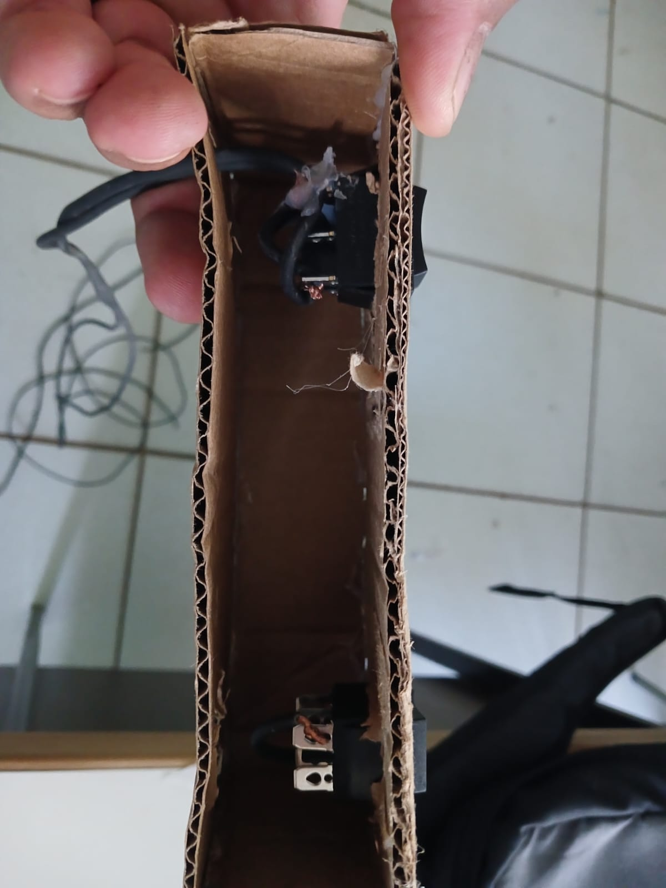

Robótica
Recuperação
Na primeira abordagem podemos construir o controle do carrinho, nesta imagens está o esquema
para recorte do formato controle, com isso precisamos de:
- Papelão
- Tesoura
- Cola quente
- Interruptor invertível
- Fio 1,5mm
Segue o esquema abaixo para recorte


PDF com o o esquema em medida escala real
PDF controle